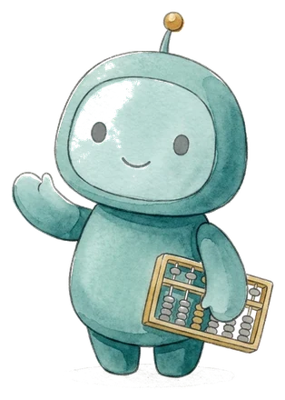
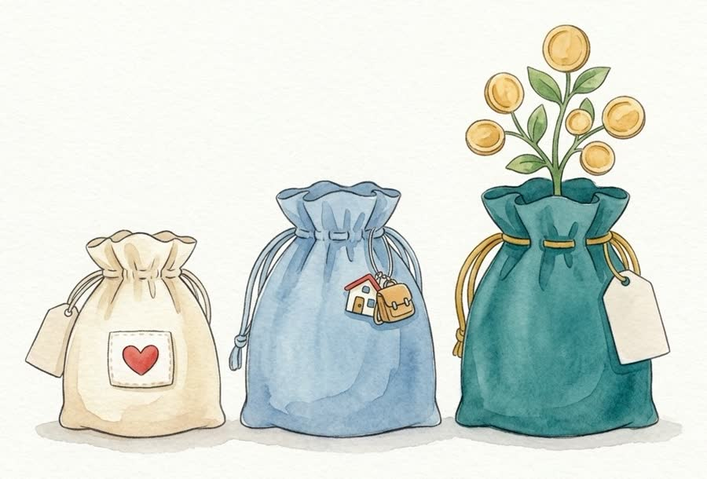

その答えを、1時間で「うちの数字」にする会です。
はじめての方も、気軽にどうぞ。😊
同じ1時間でも、始めるところは家ごとに違います。
近いものを、ひとつ見つけてみてください。
お金を、使う時期で3つの袋に分けるところから始めます。

③が見えると、「やる・やらない・いくらで」を自分で決めやすくなります。
たとえば、40代・お子さん2人・貯金400万円のご家庭なら、「まず毎月1万円台から」のように、うちの額が見えてきます。
※あくまで一例です。
額は家ごとに違います。
③が少ないときは、新NISAをやらないという答えもあります。
数字は手元のメモで、金額は口に出さなくて大丈夫です。
「だいたい」「多い・少ない」で進められます。
お金に対する不安が和らぎ、生き方まで変わりました
「資産運用をやってみたいけど、何から始めればいいか分からない」。
周りにも相談できる人がいなくて、ずっと不安を抱えていました。
Voicyで森川さんの話を聞いたとき、"難しそう"だった運用がグッと身近に。
今では不安が和らぎ、年齢を言い訳にせずチャレンジできる自分に出会えました。ただの勉強会ではなく、人生そのものに前向きになれる場所です。
50代・サービス業 大和田 恵さん
※参加者ご本人の感想です。
感じ方には個人差があります。
参加は無料です。
1回1〜3名の少人数です。
合う日がないときは、LINEで希望の日を一言どうぞ。
その日が開いたら、いちばんにお知らせします。